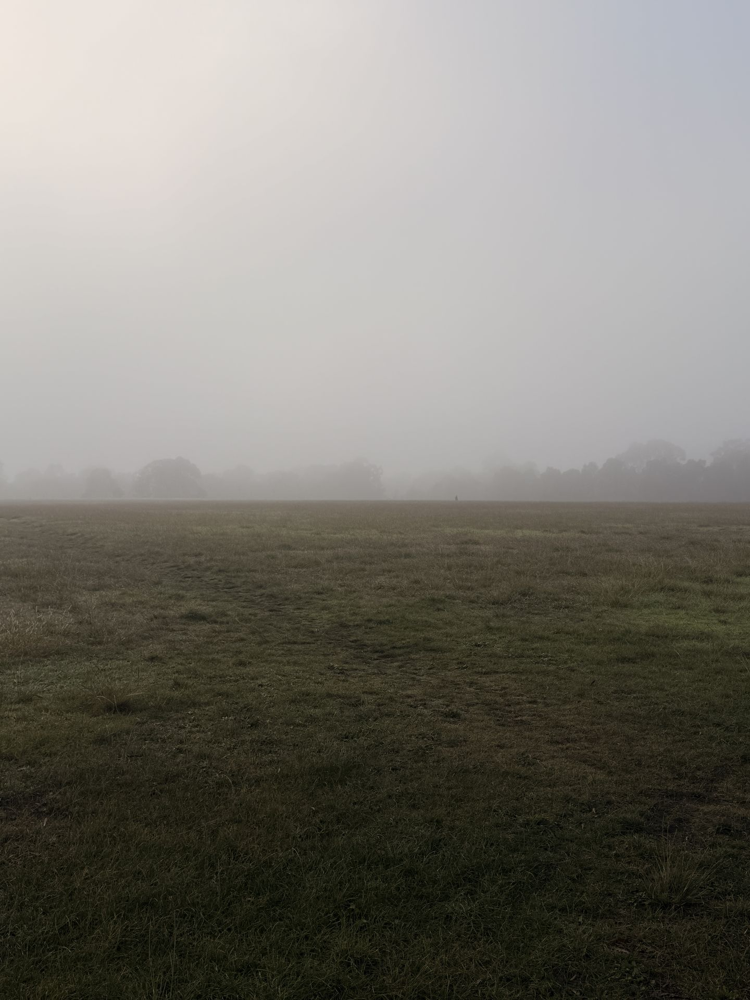
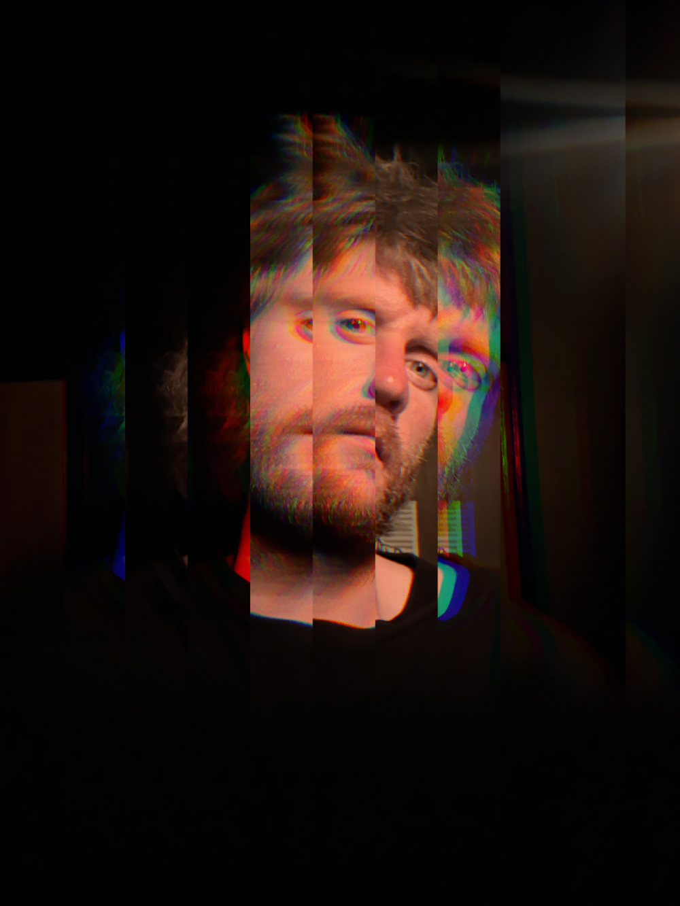

Geordie Crawley is a Melbourne-based playwright, creative, and improvisor. He is the co-founder of the multi-award-winning independent theatre company Rorschach Beast and a former curator for STRUT's site-specific dance platform Situ8.
Geordie's play Logue Lake premiered at the 2024 Perth Festival, sweeping the Performing Arts WA Awards including Best Mainstage Production and Best New Work. His other writing credits include Hive Mind, Girl in the Wood, All That Is Solid Melts Into Air, and The Narwhal.
A long-time performer, Geordie has been improvising with The Big HOO-HAA!! since 2012 and is the creator of the hit extravaganza Impro Musical BangTown!. He has also worked with The Last Great Hunt and Spare Parts Puppet Theatre.
He is also the creator of the game Provenance and writes an irregularly updated Substack.